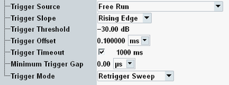

The "Trigger" tab configures the trigger system for the power measurement.

Selects the source of the trigger event. Some of the trigger sources require additional options.
"Free Run" | The measurement starts immediately after it is initiated, no trigger is used. The remaining trigger settings are not relevant for "Free Run" measurements. |
"IF Power" | The measurement is triggered by the measured power steps. The trigger event is generated after down-conversion of the measured RF signal to the IF band. All other trigger settings apply to this trigger source. Adjust them to the measured power steps. |
"...External..." | External trigger signal fed in via the rear panel of the instrument (availability depends on instrument model). |
"GPRF Gen..." | Trigger event provided by the arbitrary waveform generator of a "GPRF Generator" application. The "GPRF Gen..." trigger events are generated while an ARB file is processed. |
Qualifies whether the trigger event is generated at the rising or at the falling edge of the trigger pulse. This setting has no influence on "Free Run" measurements and for evaluation of trigger pulses provided by other firmware applications.
Defines the input signal power where the trigger condition is satisfied and a trigger event is generated. The trigger threshold is valid for power trigger sources. It is a dB value, relative to the reference level minus the external attenuation ("<Ref. Level> – <External Attenuation (Input)> – <Frequency Dependent External Attenuation>"). If the reference level equals the maximum output power of the DUT and the external attenuation settings are correct, the trigger threshold is relative to the maximum input power.
A low threshold can be required to ensure that the R&S CMW can always detect the input signal. A higher threshold can prevent unintended trigger events.
Defines a time delaying the start of the measurement relative to the trigger event. This setting has no influence on "Free Run" measurements.
See also "Measurement Length".
Remote command:Sets a time after which an initiated measurement must have received a trigger event. If no trigger event is received, a trigger timeout is indicated in manual operation mode. In remote control mode, the measurement is automatically stopped. The parameter can be disabled so that no timeout occurs.
This setting has no influence on "Free Run" measurements.
Defines a minimum duration of the power-down periods (gaps) between two triggered power pulses. This setting is valid for an "(IF) Power" trigger source.
- At the IF power-down ramp of each triggered or untriggered pulse, even if the previous counter has not yet elapsed. A power-down ramp is detected when the signal power falls below the trigger threshold.
- At the beginning of each measurement. The minimum gap defines the minimum time between the start of the measurement and the first trigger event.
The trigger system is rearmed when the timer has reached the specified minimum gap.

You can use the "Minimum Trigger Gap" to prevent unwanted trigger events due to fast power variations. Such events can occur, for example, for measurements on 8PSK-modulated bursts where the power can drop for a short time.
Remote command:Defines the trigger scheme for the measured step sequence. Each trigger event (e.g. an event derived from the RF input power ramp) can trigger a single measurement step or a series of consecutive measurement steps. This setting has no impact on "Free Run" measurements.
For details about the values, see "Trigger Modes".
The power steps for the "Retrigger Preselect" mode are selected via the "List Configuration Tab". While "Parameter Set Mode" is set to "List", the "Trigger Mode" is fixed to "Retrigger Preselect".
Remote command: